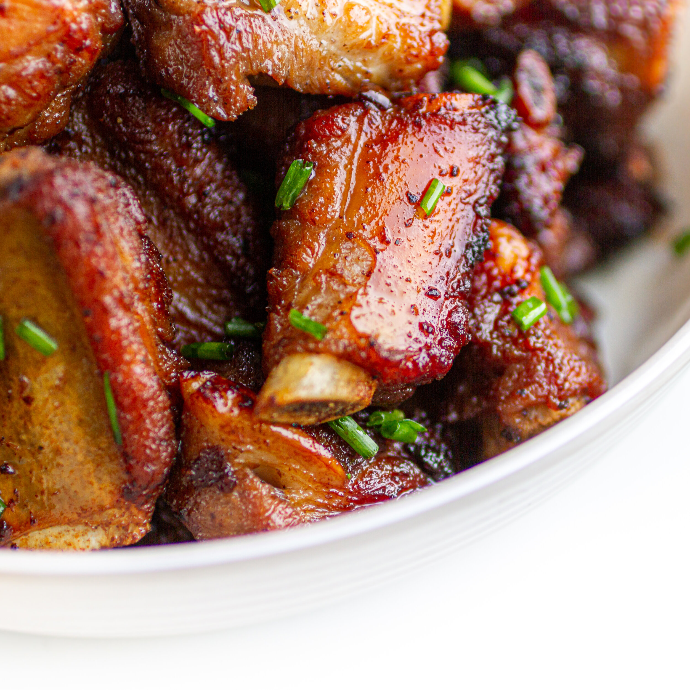

Thit Kho

Description
This is a recipe for delicious Vietnamese braised pork ribs. This recipe
has been passed down from my Grandmother. This is a staple dish in the
Vietnamese home.
Ingredients
Marinade
- 3 garlic cloves (minced)
- 1 medium shallot (minced)
- 1/2 tsp sugar
- 1/2 tsp salt
- 1/2 tsp pepper
- 2 tbsp chicken powder
Dish
- 2 lbs of precut pork ribs
- 1 1/2 tbsp sugar
- 3 tbsp vegetable oil
- 1 tbsp dark soy sauce
- 1 tbsp fish sauce (or to taste)
- 24 oz of coconut water
Steps
-
Mix marinade ingredients with pork ribs and marinate in fridge for min.
1 hour
- On a hot wok or deep pan add oil and sugar
- On medium high heat, let sugar melt in oil
-
Once sugar has liquified in oil, put in marinated ribs (careful of oil
splash)
-
Cook ribs until brown on all sides, constantly mix so sugar does not
burn
- Pour in coconut water, once boiling lower head to medium/low
- Remove any dredge, add dark soy sauce and fish sauce
- Let simmer for about 1 hour, turning ribs occasionally